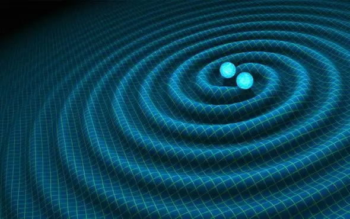

Articles ·
Is Gravity Quantum?
The ongoing search for the graviton—the proposed fundamental particle carrying gravitational force—is a crucial step in physicists’ long journey toward a theory of everything
All the fundamental forces of the universe are known to follow the laws of quantum mechanics, save one: gravity. Finding a way to fit gravity into quantum mechanics would bring scientists a giant leap closer to a “theory of everything” that could entirely explain the workings of the cosmos from first principles. A crucial first step in this quest to know whether gravity is quantum is to detect the long-postulated elementary particle of gravity, the graviton. In search of the graviton, physicists are now turning to experiments involving microscopic superconductors, free-falling crystals and the afterglow of the big bang.
Quantum mechanics suggests everything is made of quanta, or packets of energy, that can behave like both a particle and a wave—for instance, quanta of light are called photons. Detecting gravitons, the hypothetical quanta of gravity, would prove gravity is quantum. The problem is that gravity is extraordinarily weak. To directly observe the minuscule effects a graviton would have on matter, physicist Freeman Dyson famously noted, a graviton detector would have to be so massive that it collapses on itself to form a black hole.
“One of the issues with theories of quantum gravity is that their predictions are usually nearly impossible to experimentally test,” says quantum physicist Richard Norte of Delft University of Technology in the Netherlands. “This is the main reason why there exist so many competing theories and why we haven’t been successful in understanding how it actually works.”

In 2015, however, theoretical physicist James Quach, now at the University of Adelaide in Australia, suggested a way to detect gravitons by taking advantage of their quantum nature. Quantum mechanics suggests the universe is inherently fuzzy—for instance, one can never absolutely know a particle’s position and momentum at the same time. One consequence of this uncertainty is that a vacuum is never completely empty, but instead buzzes with a “quantum foam” of so-called virtual particles that constantly pop in and out of existence. These ghostly entities may be any kind of quanta, including gravitons.
Decades ago, scientists found that virtual particles can generate detectable forces. For example, the Casimir effect is the attraction or repulsion seen between two mirrors placed close together in vacuum. These reflective surfaces move due to the force generated by virtual photons winking in and out of existence. Previous research suggested that superconductors might reflect gravitons more strongly than normal matter, so Quach calculated that looking for interactions between two thin superconducting sheets in vacuum could reveal a gravitational Casimir effect. The resulting force could be roughly 10 times stronger than that expected from the standard virtual-photon-based Casimir effect.
Recently, Norte and his colleagues developed a microchip to perform this experiment. This chip held two microscopic aluminum-coated plates that were cooled almost to absolute zero so that they became superconducting. One plate was attached to a movable mirror, and a laser was fired at that mirror. If the plates moved because of a gravitational Casimir effect, the frequency of light reflecting off the mirror would measurably shift. As detailed online July 20 in Physical Review Letters, the scientists failed to see any gravitational Casimir effect. This null result does not necessarily rule out the existence of gravitons—and thus gravity’s quantum nature. Rather, it may simply mean that gravitons do not interact with superconductors as strongly as prior work estimated, says quantum physicist and Nobel laureate Frank Wilczek of the Massachusetts Institute of Technology, who did not participate in this study and was unsurprised by its null results. Even so, Quach says, this “was a courageous attempt to detect gravitons.”
Although Norte’s microchip did not discover whether gravity is quantum, other scientists are pursuing a variety of approaches to find gravitational quantum effects. For example, in 2017 two independent studies suggested that if gravity is quantum it could generate a link known as “entanglement” between particles, so that one particle instantaneously influences another no matter where either is located in the cosmos. A tabletop experiment using laser beams and microscopic diamonds might help search for such gravity-based entanglement. The crystals would be kept in a vacuum to avoid collisions with atoms, so they would interact with one another through gravity alone. Scientists would let these diamonds fall at the same time, and if gravity is quantum the gravitational pull each crystal exerts on the other could entangle them together.
The researchers would seek out entanglement by shining lasers into each diamond’s heart after the drop. If particles in the crystals’ centers spin one way, they would fluoresce, but they would not if they spin the other way. If the spins in both crystals are in sync more often than chance would predict, this would suggest entanglement. “Experimentalists all over the world are curious to take the challenge up,” says quantum gravity researcher Anupam Mazumdar of the University of Groningen in the Netherlands, co-author of one of the entanglement studies.
Another strategy to find evidence for quantum gravity is to look at the cosmic microwave background radiation, the faint afterglow of the big bang, says cosmologist Alan Guth of M.I.T. Quanta such as gravitons fluctuate like waves, and the shortest wavelengths would have the most intense fluctuations. When the cosmos expanded staggeringly in size within a sliver of a second after the big bang, according to Guth’s widely supported cosmological model known as inflation, these short wavelengths would have stretched to longer scales across the universe. This evidence of quantum gravity could be visible as swirls in the polarization, or alignment, of photons from the cosmic microwave background radiation.
However, the intensity of these patterns of swirls, known as B-modes, depends very much on the exact energy and timing of inflation. “Some versions of inflation predict that these B-modes should be found soon, while other versions predict that the B-modes are so weak that there will never be any hope of detecting them,” Guth says. “But if they are found, and the properties match the expectations from inflation, it would be very strong evidence that gravity is quantized.”
One more way to find out whether gravity is quantum is to look directly for quantum fluctuations in gravitational waves, which are thought to be made up of gravitons that were generated shortly after the big bang. The Laser Interferometer Gravitational-Wave Observatory (LIGO) first detected gravitational waves in 2016, but it is not sensitive enough to detect the fluctuating gravitational waves in the early universe that inflation stretched to cosmic scales, Guth says. A gravitational-wave observatory in space, such as the Laser Interferometer Space Antenna (LISA), could potentially detect these waves, Wilczek adds.
In a paper recently accepted by the journal Classical and Quantum Gravity, however, astrophysicist Richard Lieu of the University of Alabama, Huntsville, argues that LIGO should already have detected gravitons if they carry as much energy as some current models of particle physics suggest. It might be that the graviton just packs less energy than expected, but Lieu suggests it might also mean the graviton does not exist. “If the graviton does not exist at all, it will be good news to most physicists, since we have been having such a horrid time in developing a theory of quantum gravity,” Lieu says.
Still, devising theories that eliminate the graviton may be no easier than devising theories that keep it. “From a theoretical point of view, it is very hard to imagine how gravity could avoid being quantized,” Guth says. “I am not aware of any sensible theory of how classical gravity could interact with quantum matter, and I can’t imagine how such a theory might work.”
Migrated from the AUASS website archive as published, with the formatting tidied.